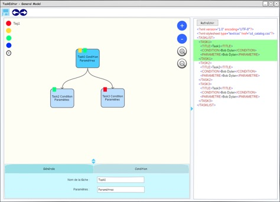

La conception du projet passe par l'élaboration d'un cahier de charge, mettant en place les différents aspects représentants les besoins, les premières idées de maquette en détaillant les fonctionnalités à développer, l'étude des logiciels concurrents ainsi que le positionnement du projet.
Les principales fonctionnalités explicitées par les utilisateurs étaient que :
Les fonctionnalités de visualisation/édition de l’arbre ainsi que celle de visualisation/édition des propriétés générales du modèle peuvent être regroupées en une seule entité dans la limite où l’on admet que les propriétés générales du modèle sont limitées à l’existence de tags.
Il y a donc trois parties principales de l’interface à développer :
La maquette générale de l’application prendra la forme suivante:
La partie centrale correspond à la visualisation graphique et l’édition de l’arbre des tâches avec les options d’édition à sa droite et les options relatives à la gestion des tags sur la gauche. Sous cet arbre se trouve la partie d’édition des propriétés d’une tâche. Enfin à droite de l’application nous retrouvons le XML correspondant à l’arbre graphique.
Cette maquette ne comprend pas les éléments de design finaux à cause des limites d’utilisation de la version gratuite du logiciel de maquettage, elle nous permet d’avoir une représentation globale de l’espace et du positionnement des objets.
Un logiciel a été développé par la Junior Entreprise de l’UTC, l’USEC, dans le même but. Ce logiciel comporte quelques problèmes. Il ne permet pas de modifier plusieurs caractéristiques des tâches simultanément. Il ne propose pas de sauvegarder quand on quitte le logiciel.
Comme cela a été précisé au cours des parties précédentes, nous allons mettre l’accent sur la facilité d'utilisation de l'application, le fait que l'utilisation de chaque fonctionnalité soit le plus intuitif et pratique possible. Nous allons donc notamment éviter l'ouverture d'onglets secondaires grâce à une répartition cohérente et pertinente des options. Enfin nous allons livrer une application complète en incluant la possibilité de sauvegarder et d'importer des arbres.
Les premières idées de conception et études des besoins.
Ce n'est jamais définitif jusqu'à ce que l'implémentation commence...